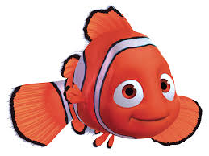

School of Creative Technologies

Creative Technologies Courses (CTK)
200 Level Classes
- 101 - Basic Skills in The Digital Arts (3): Introduction to the history, theories, and current trends in digital arts.
- 202 - Foundations: Audio Theory (3): Fundamentals of audio theory and physics of sound.
- 203 - Foundations: Recording and Sampling (3): Technical skills for recording and sampling instruments.
- 204 - Foundations: Music Concepts (3): Study of foundational music concepts, history, genres, and forms.
- 208 - Audio Production I (3): Introduction to audio production techniques in a DAW environment.
- 240 - Sound Design 1: Beginning Digital Audio (3): Introduction to digital audio and aesthetic principles.
300 Level Classes
- 301 - Web Design and Development (3): Creation of standards-compliant web sites.
- 302 - Computer Programming for Creatives (3): Text-based, object-oriented programming concepts.
- 303 - Advanced Web Design and Development (3): Advanced programming methods for web sites.
- 320 - Programming Dynamic Media (3): Graphical, dataflow environment for media-based performance.
- 330 - Web Video (3): Technical skills for creating fictional and documentary video content.
- 340 - Sound Design 2: Advanced Digital Audio (3): Advanced digital audio and aesthetic principles.
- 354 - Sequencing and Digital Audio (3): Study of music synthesis through MIDI sequencers.
- 351 - Game Design I (3): Foundational game design concepts.
- 354 - User Experience Design for Games (3): Common trends in gaming interface design.
- 377 - Motion Graphics (3): Compositing, animation, and visual effects for broadcast and web.